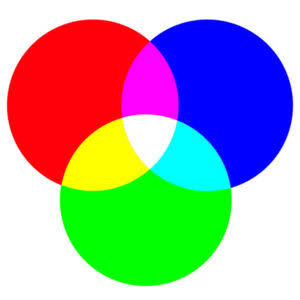

Kleurmodellen
Wat zijn kleurmodellen?
Een kleurmodel is een manier waarop kleuren digitaal worden beschreven. Computers kunnen kleuren niet gewoon "zien" zoals mensen dat doen. Daarom worden kleuren opgeslagen als getallen.
Er bestaan verschillende kleurmodellen. Voor computers en digitale schermen is vooral het RGB-kleurmodel belangrijk. Voor drukwerk wordt vaak CMYK gebruikt.

RGB
RGB staat voor Rood (Red), Groen (Green) en Blauw (Blue). Met deze drie kleuren kan een computer heel veel verschillende kleuren maken.
Iedere kleur krijgt een waarde. Bij RGB ligt deze waarde tussen 0 en 255.
Rood: RGB(255, 0, 0)
Groen: RGB(0, 255, 0)
Blauw: RGB(0, 0, 255)
Wit: RGB(255, 255, 255)
Zwart: RGB( 0, 0, 0)